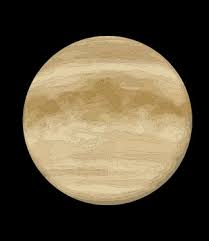

Planet Venus adalah planet kedua dari Matahari dan seringkali disebut sebagai "planet kembar Bumi" karena ukuran dan komposisi kimianya yang mirip dengan Bumi. Namun, Venus memiliki kondisi permukaan yang sangat ekstrem.
Atmosfer Venus terdiri dari gas-gas tebal seperti karbon dioksida, menciptakan efek rumah kaca yang menghasilkan suhu permukaan tertinggi di antara semua planet dalam tata surya, bahkan lebih panas daripada Merkurius. Permukaan Venus penuh dengan dataran berbatu dan gunung berapi yang menunjukkan bukti aktivitas vulkanik.